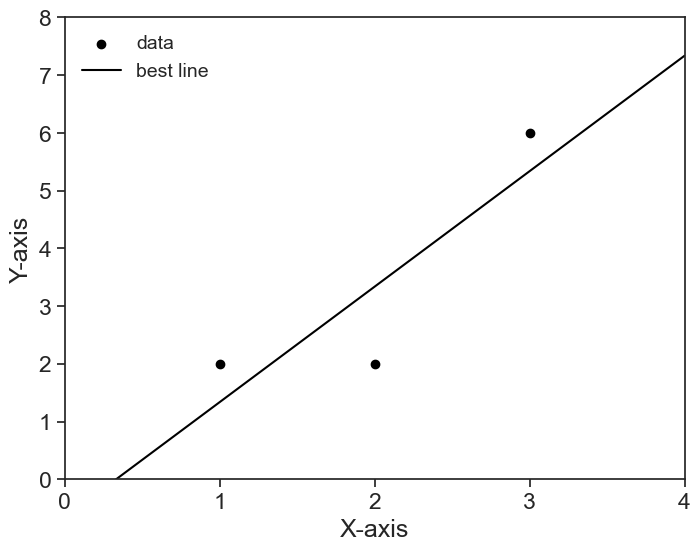
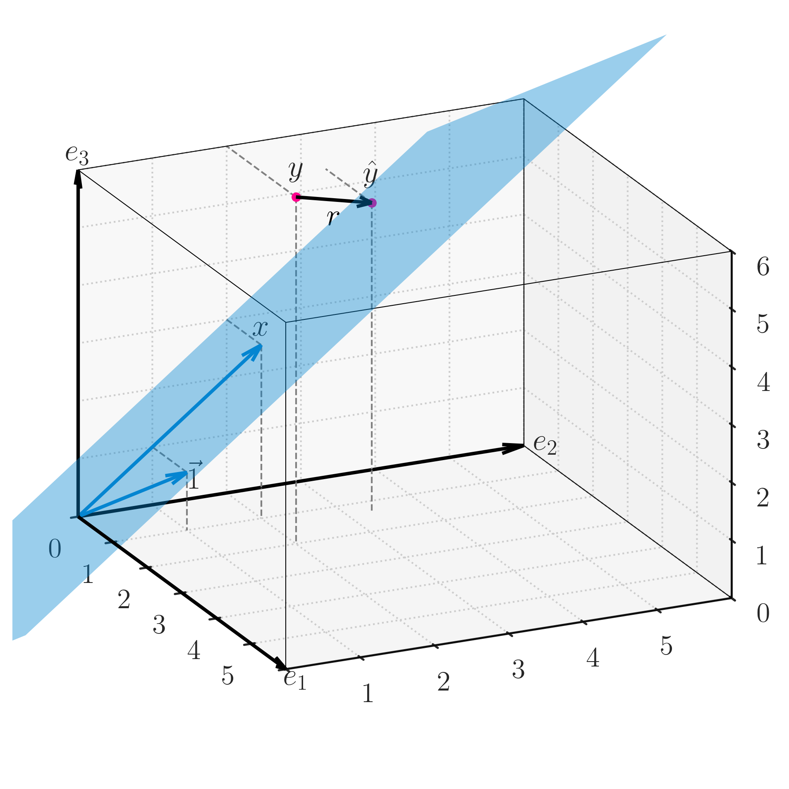
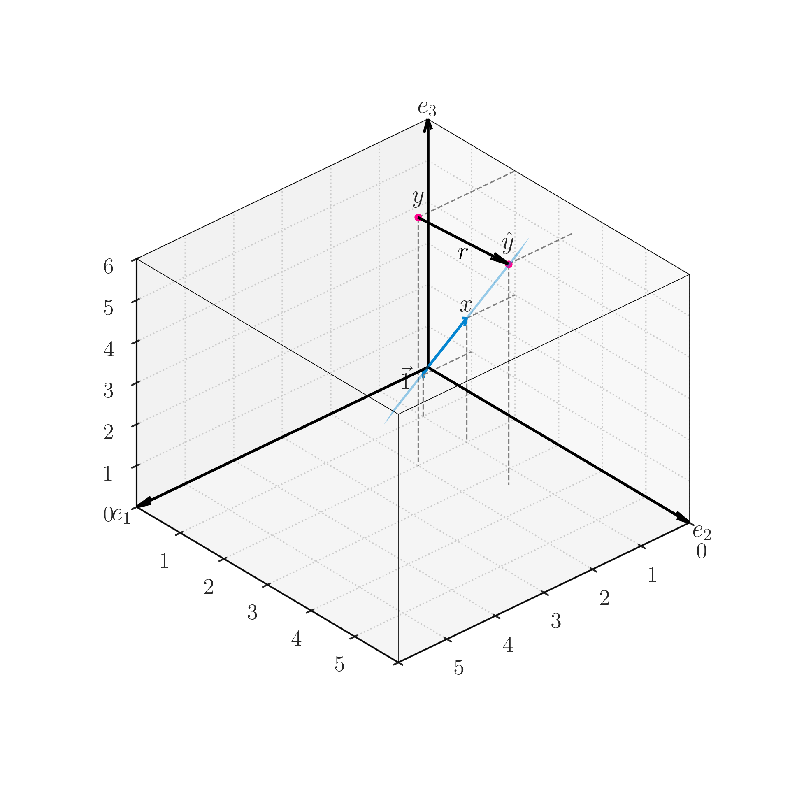
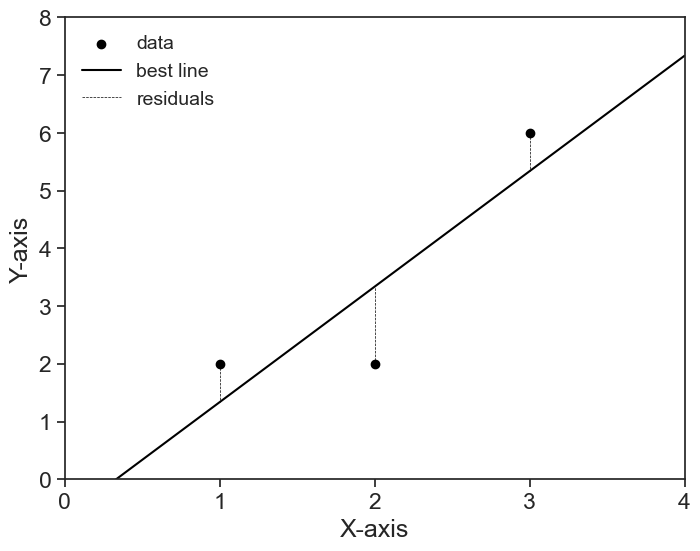

12 the geometry of regression
12.1 a very simple example
It’s almost always best to start with a simple and concrete example.
Goal: We wish to find the best straight line that describes the following data points:
define and plot the simple problem
x = np.array([1, 2, 3])
y = np.array([2, 2, 6])
fig, ax = plt.subplots(figsize=(8, 6))
ax.scatter(x, y, label='data', facecolors='black', edgecolors='black')
# linear regression
slope, intercept, r_value, p_value, std_err = scipy.stats.linregress(x, y)
x_domain = np.linspace(0, 4, 101)
ax.plot(x_domain, intercept + slope * x_domain, color='black', label='best line')
ax.legend(loc='upper left', fontsize=14, frameon=False)
ax.set(xlim=(0, 4),
ylim=(0, 7),
xticks=np.arange(0, 5, 1),
yticks=np.arange(0, 9, 1),
xlabel='X-axis',
ylabel='Y-axis');
12.2 formalizing the problem
Let’s translate this problem into the language of linear algebra.
The independent variable x is the column vector
x= \begin{pmatrix} 1 \\ 2 \\ 3 \end{pmatrix}
and the dependent variable y is the column vector
y= \begin{pmatrix} 2 \\ 2 \\ 6 \end{pmatrix}.
Because we are looking for a straight line, we can express the relationship between x and y as
\tilde{y} = \beta_0 + \beta_1 x.
Here we introduced the notation \tilde{y} to denote the predicted values of y based on the linear model. It is different from the actual values of y because the straight line usually does not pass exactly on top of y.
The parameter \beta_0 is the intercept and \beta_1 is the slope of the line.
Which values of \beta_0,\beta_1 will give us the very best line?
12.3 higher dimensions
It is very informative to think about this problem not as a scatter plot in the X-Y plane, but as taking place in a higher-dimensional space. Because we have three data points, we can think of the problem in a three-dimensional space. We want to explain the vector y as a linear combination of the vector x and a constant vector (this is what our linear model states).
In three dimensions, our building blocks are the vectors c, the intercept, and x, the data points.
c= \begin{pmatrix} 1 \\ 1 \\ 1 \end{pmatrix}, \qquad x= \begin{pmatrix} 1 \\ 2 \\ 3 \end{pmatrix}.
We can combine these c and x as column vectors in a matrix called design matrix:
X= \begin{pmatrix} 1 & x_0 \\ | & | \\ 1 & x_i \\ | & | \\ 1 & x_n \end{pmatrix} = \begin{pmatrix} | & | \\ 1 & x \\ | & | \end{pmatrix}
Why is this convenient? Because now the linear combination of \vec{1} and x can be expressed as a matrix multiplication:
\begin{pmatrix} \hat{y}_0 \\ \hat{y}_1 \\ \hat{y}_2 \end{pmatrix} = \begin{pmatrix} 1 & x_0 \\ 1 & x_1 \\ 1 & x_2 \\ \end{pmatrix} \begin{pmatrix} \beta_0 \\ \beta_1 \end{pmatrix} = \begin{pmatrix} 1\cdot\beta_0 + x_0\cdot\beta_1 \\ 1\cdot\beta_0 + x_1\cdot\beta_1 \\ 1\cdot\beta_0 + x_2\cdot\beta_1 \end{pmatrix}
In short, the linear combination of our two building blocks yields a prediction vector \hat{y}:
\hat{y} = X \beta,
where \beta is the column vector (\beta_0, \beta_1)^T.
This prediction vector \hat{y} lies on a plane in the 3d space, it cannot be anywhere in this 3d space. Mathematically, we say that the vector \hat{y} is in the subspace spanned by the columns of the design matrix X.
It will be extremely improbable that the vector y will also lie on this plane, so we will have to find the best prediction \hat{y} that lies on this plane. Geometrically, our goal is to find the point \hat{y} on the plane that is closest to the point y in the 3d space.
- When the distance r=y-\hat{y} is minimized, the vector r is orthogonal to the plane spanned by the columns of the design matrix X.
- We call this vector r the residual vector.
- The residual is orthogonal to each of the columns of X, that is, \vec{1}\cdot r=0 and x\cdot r=0.
I tried to summarize all the above in the 3d image below. This is, for me, the geometry of regression. If you have that in your head, you’ll never forget it.

Another angle of the image above. This time, because the view direction is within the plane, we see that the residual vector r is orthogonal to the plane spanned by the columns of the design matrix X. 
For a fully interactive version, see this Geogebra applet.
Taking advantage of the matrix notation, we can express the orthogonality condition as follows:
\begin{pmatrix} - & 1 & - \\ - & x & - \end{pmatrix} r = X^T r = 0
Let’s substitute r = y - \hat{y} = y - X\beta into the equation above.
X^T(y - X\beta) = 0
Distributing yields
X^Ty - X^TX\beta = 0,
and then
X^TX\beta = X^Ty.
We need to solve this equation for \beta, so we left-multiply both sides by the inverse of X^TX,
\beta = (X^TX)^{-1}X^Ty.
That’s it. We did it. Given the data points x and y, we can compute the parameters \beta_0 and \beta_1 that bring \hat{y} as close as possible to y. These parameters are the best fit of the straight line to the data points.
12.4 overdetermined system
The design matrix X is a tall and skinny matrix, meaning that it has more rows (n) than columns (m). This is called an overdetermined system, because we have more equations (rows) than unknowns (columns), so we have no hope in finding an exact solution \beta.
This is to say that, almost certainly, the vector y does not lie on the plane spanned by the columns of the design matrix X. No combination of the parameters \beta will yield a vector \hat{y} that is exactly equal to y.
12.5 least squares
The method above for finding the best parameters \beta is called least squares. The name comes from the fact that we are trying to minimize the length of the residual vector
r = y - \hat{y}.
The length of the residual is given by the Euclidean norm (or L^2 norm), which is a direct generalization of the Pythagorean theorem for many dimensions.
\begin{align} \Vert r\Vert^2 &= \Vert y - \hat{y}\Vert^2 \\ &= (y_0 - \hat{y}_0)^2 + (y_1 - \hat{y}_1)^2 + \cdots + (y_{n-1} - \hat{y}_{n-1})^2 \\ &= r_0^2 + r_1^2 + \cdots + r_{n-1}^2 \end{align}
The length (squared) of the residual vector is the sum of the squares of all residuals. The best parameters \beta are those that yield the least squares, thus the name.
define and plot the simple problem
fig, ax = plt.subplots(figsize=(8, 6))
ax.scatter(x, y, label='data', facecolors='black', edgecolors='black')
x_domain = np.linspace(0, 4, 101)
ax.plot(x_domain, intercept + slope * x_domain, color='black', label='best line')
def linear(x, slope, intercept):
return intercept + slope * x
for i, xi in enumerate(x):
ax.plot([xi, xi],
[y[i], linear(xi, slope, intercept)],
color='black', linestyle='--', linewidth=0.5,
label='residuals' if i == 0 else None)
ax.legend(loc='upper left', fontsize=14, frameon=False)
ax.set(xlim=(0, 4),
ylim=(0, 7),
xticks=np.arange(0, 5, 1),
yticks=np.arange(0, 9, 1),
xlabel='X-axis',
ylabel='Y-axis');
12.6 many more dimensions
The concrete example here dealt with only three data points, therefore we could visualize the problem in a three-dimensional space. However, the same reasoning applies to any number of data points and any number of independent variables.
- any number of data points: we call the number of data points n, and that makes y be a vector in an n-dimensional space.
- any number of independent variables: we calculated a regression for a straight line, and thus we had only two building blocks, the intercept \vec{1} and the independent variable x. However, we can have any number of independent variables, say m of them. For example, we might want to predict the data using a polynomial of degree m, or we might have any arbitrary m functions that we wish to use: \exp(x), \tanh(x^2), whatever we want. All this will work as long as the parameters \beta multiply these building blocks. That’s the topic of the next chapter.